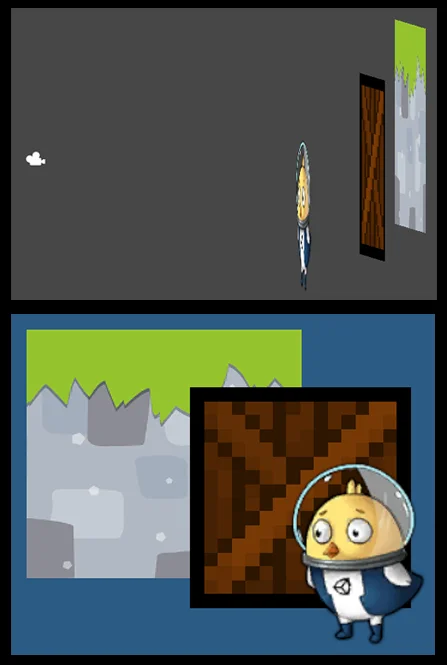

To place 2D GameObjects behind or in front of each other in the scene, change their sorting order.
For more information about the criteria Unity uses to order sprites and other 2D GameObjects, refer to 2D rendering order.
The following applies to sprites, tiles, and sprite shapes.
You can use layers to represent different depths because they are separate and Unity renders them in order. Use the Sorting Layer and Order in Layer properties of the renderer component of the GameObject.
By default, all 2D GameObjects are on the Default sorting layer and have the same Order in Layer value of 0. To move 2D GameObjects to a different layer, follow these steps:
From the main menu, select Edit > Project Settings > Tags and Layers.
In the Sorting Layers section, select the Add (+) button to add a new sorting layer.
By default, Unity adds the new layer at the bottom of the list. Unity renders the layers in order from top to bottom, so the new layer is now the front layer in the scene.
Select the 2D GameObject you want to add to the layer.
In the Additional Settings section of the renderer component, for example the Sprite Renderer component, set the Sorting Layer property to the new layer.
To create sublayers, use the Order in Layer property. Unity renders sublayers in numerical order, so lower values render behind higher values. For example, a sprite with an Order in Layer value of –1 renders behind a sprite with an Order in Layer value of 3.
To avoid groups of sprites mixing on the same layers and sublayers, refer to Prevent 2D GameObjects mixing in sorting layers.
To set the order of 2D GameObjects within a sorting layer and sublayer, use either of the following approaches:
To control the order within a sublayer, give GameObjects different materials with different render queue values. By default, 2D materials all have a render queue value of 3000.
To change the render queue, follow these steps:
3000+1 to render this material after default 2D materials.For more information, refer to Render queues and sorting behaviours.
Within a sorting layer, a sublayer, and a render queue, Unity determines the order of 2D GameObjects by calculating their distance from the camera.
By default, Unity calculates the distance based on the Projection property of the cameraA component which creates an image of a particular viewpoint in your scene. The output is either drawn to the screen or captured as a texture. More info
See in Glossary. Set it to one of the following:

To change the distance calculation without affecting the camera projection, use the Transparency Sort Mode property of the 2D renderer asset.
Note: If you use the Built-in Render Pipeline, the Transparency Sort Mode property is in the Graphics settings window instead.
To use the 2D position of GameObjects to calculate distance, use a custom axis.
Follow these steps:
For example: